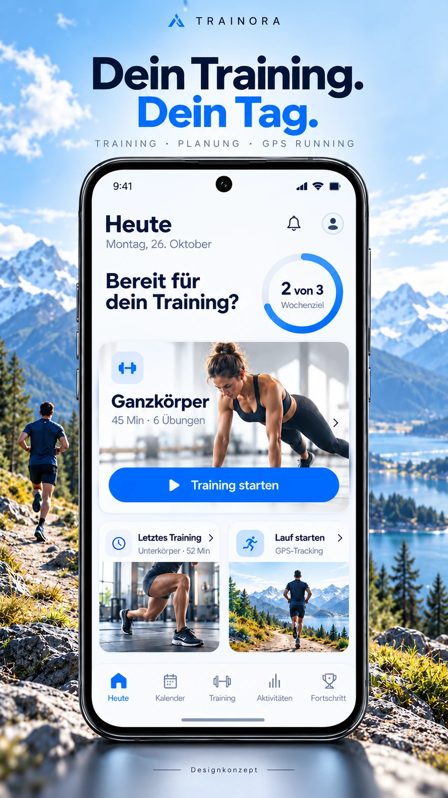

▦
Deine Woche im Blick
Training planen, Aktivitäten nachtragen und erledigte Einheiten abhaken. Auch Ruhetage bekommen ihren Platz.
Kraft aufbauen. Draußen aufatmen. Dranbleiben.
Dein Begleiter für Training, Kalender und Laufstrecken – alles an einem Ort.
Vom ersten Satz bis zum letzten Kilometer: Kalender, über 80 Übungen, 10 Basispläne und GPS-Aufzeichnung bilden das Fundament. Die Abbildungen zeigen Designkonzepte mit Beispieldaten.
Training planen, Aktivitäten nachtragen und erledigte Einheiten abhaken. Auch Ruhetage bekommen ihren Platz.
Übungen nach Muskelgruppe und Equipment finden. Über 80 integrierte Übungen erleichtern deinen Einstieg.
Gewicht, Wiederholungen und Pausen dokumentieren. Mit den letzten Werten im Blick gezielt weitertrainieren.
Läufe, Spaziergänge und Radtouren mit Zeit, Distanz und GPS-Strecke festhalten.
Pausentimer, Intervalle und flexible Trainingspläne – abgestimmt auf deinen Alltag.
Deine Trainingshistorie übersichtlich auswerten und persönliche Entwicklungen entdecken.
Entdecke vier Bereiche im Trainora-Design.
Wechsle die Ansicht und schau genauer hin.

Dein nächstes Training, dein Wochenziel und die letzten Aktivitäten. Alles dort, wo du es brauchst.
Designkonzept mit Beispieldaten.
Der spätere Funktionsumfang kann abweichen.
Dein Training passt sich dir an. Auf dem Smartphone, auf dem Tablet und auch im Querformat.
Den ganzen Umfang ansehenZweispaltige Ansichten, eine Workout-Seitenleiste und die GPS-Karte im Mittelpunkt. Das vertraute Hochformat bleibt.
12 Herausforderungen: 6 kostenlos und 6 im Herausforderungs-Paket. „Dein Fortschritt“ bringt deine Entwicklung direkt auf Heute.
5 neue Skins, darunter AMOLED Schwarz kostenlos. Lebendige Hintergründe im Skin-Paket Elite. Anzeigegröße Kompakt, Standard oder Groß.
Auf Wunsch bleibt dein Bildschirm während des Trainings eingeschaltet. Alle Grundfunktionen bleiben kostenlos.
10 integrierte Basispläne und 9 zusätzliche Programme in drei optionalen Paketen. Sieh dir Tage, Übungen, Sätze und die geschätzte Dauer vor dem Freischalten an.
Bereits aktivierte Premium-Pläne bleiben laut Stand 0.2.0 auch nach Ablauf eines Abonnements nutzbar.
Navy und Türkis bilden die visuelle Heimat von Trainora: ruhige Flächen, leuchtende Akzente und klare Werte. In der App wählst du deinen eigenen Stil.
Standard, Glas oder Umriss als kostenlose Kartenstile. Skin-Vorschau mit echten Bedienelementen. Vier App-Symbole und vier Timer-Klänge. Animationen lassen sich reduzieren.
Kostenlos: Ozean, Graphit, Hoher Kontrast und neu AMOLED Schwarz.
Durch Fortschritt: Wald, Sonnenaufgang und Arktis.
Im Shop: Sakura, Wüste, Polarlicht, Mitternacht, Lava und Retro. 0.3 ergänzt insgesamt fünf neue Skins.
Kalender mit wiederkehrenden Terminen, Übungen und Trainingsplänen, Workout-Protokoll, Timer, Erinnerungen und Widget. Training eintragen, durchführen und abhaken.
GPS-Aufzeichnung und Trainingsstatistik. Im Querformat von 0.3 steht die Karte in der Mitte. Standortdaten gehören nicht in das teilbare Wochenrückblick-Bild.
24 Erfolge in vier Kategorien, XP und Level. Wochenrückblick mit Einheiten, Minuten, aktiven Tagen und Distanz samt Vorwochenvergleich. Muskelkarte von vorne und hinten.
Hantelscheiben, geschätztes 1RM nach Epley und Brzycki, Aufwärmsätze, Pace, Geschwindigkeit und Zielzeit. Aktuell mit kg und km.
Export und Backup, Deutsch und Englisch, Darstellungsoptionen, reduzierte Animationen und Vorschau für Timer-Klänge. Neuigkeiten nach Updates direkt in der App.
Programme, Skins, Klänge und Symbole als Pakete. Pro+ monatlich, jährlich oder als Lifetime-Option; erweiterte Auswertung mit 8-Wochen-Trend und Wochentagsverteilung.
Inhalte nach Entwicklungsdokumentation 0.2.0 und den bereitgestellten Versionshinweisen zu 0.3. Das Entwicklungsprojekt heißt dort „FitTrack Pro“; diese Präsentation verwendet die Marke Trainora. Ein öffentlicher Store-Release ist noch nicht bestätigt.
Kostenlos
Die Grundfunktionen für Planung, Training und Fortschritt. Dazu kostenlose Designs und sechs Herausforderungen in 0.3.
Einzelpakete
Wähle gezielt zusätzliche Programme, Skins, Klänge, Symbole oder das Herausforderungs-Paket. Preise und Verfügbarkeit findest du im App-Shop.
Dein Upgrade
Monatlich, jährlich oder Lifetime. Laut Stand 0.2.0 alle damaligen Pakete, Erfolgs-Skins sofort und zusätzliche Statistiken. Die Einordnung neuer 0.3-Pakete ist noch offen.
Aktuelle Preise werden in der App angezeigt. Käufe und Wiederherstellung sind für Google Play vorgesehen; diese Seite bietet keinen Checkout.
Wähle passende Trainingstage und einen Plan, der zu deinem Equipment und Zeitbudget passt.
Halte Sätze fest, nutze den Pausentimer oder starte draußen eine neue Aktivität.
Dein Kalender erzählt deine Trainingsgeschichte. In deinem Tempo, mit Raum für Erholung.
Trainingsdaten und Einstellungen werden laut Entwicklungsdokumentation lokal verwaltet. GPS, Karten und Google-Play-Käufe werden im Datenschutzentwurf gesondert behandelt.
Diese Landingpage enthält keine eingebauten Werbetracker, Analyse-Skripte oder Anmeldeformulare. Informationen zum Hosting und zum Stand der App findest du im Datenschutzentwurf.
Zum DatenschutzNoch nicht über diese Seite. Trainora befindet sich in Entwicklung. Sobald ein bestätigter Store-Link vorliegt, wird er hier ergänzt. Ein Veröffentlichungstermin steht noch nicht fest.
Die Abbildungen sind visuelle Designkonzepte mit Beispieldaten. Sie zeigen die geplante Gestaltung und sind kein Nachweis bereits implementierter Funktionen.
Der bisherige Entwicklungsentwurf sieht Android als Ausgangspunkt vor. Weitere Plattformen und konkrete Systemanforderungen sind noch nicht bestätigt.
Das Konzept sieht die Kernfunktionen ohne verpflichtendes Konto vor. Die endgültige Umsetzung und mögliche optionale Integrationen werden zum Release beschrieben.
Alle Grundfunktionen bleiben kostenlos. Optionale Einzelpakete und Pro+ ergänzen Designs, Programme und Auswertungen. Preise werden in der App über Google Play angezeigt. Diese Website nimmt keine Zahlungen entgegen.
Nein. Trainingsvorlagen sind allgemeine Orientierung. Die App ist nicht als medizinisches Diagnose- oder Behandlungsprodukt konzipiert.
Beide Sprachversionen in einem kopierbaren Block.
<de-DE> Neu in 0.3: • Tablets & Querformat: zweispaltige Ansichten, Workout-Seitenleiste und GPS-Karte in der Mitte. Hochformat bleibt. • Herausforderungen: 6 kostenlos, 6 im Herausforderungs-Paket. • 5 neue Skins, darunter AMOLED Schwarz gratis. • Lebendige Hintergründe im Skin-Paket Elite. • Anzeigegröße: Kompakt, Standard oder Groß. • „Dein Fortschritt“ auf Heute. • Bildschirm beim Training anlassen. Alle Grundfunktionen bleiben kostenlos. </de-DE> <en-US> New in 0.3: • Tablets & landscape: two-column layouts, a workout sidebar and a centered GPS map. Portrait stays. • Challenges: 6 free, 6 in the Challenge Pack. • 5 new skins, including free AMOLED Black. • Animated backgrounds in the Elite Skin Pack. • Display size: Compact, Standard or Large. • “Your Progress” on Today. • Keep the screen on during workouts. All core features remain free. </en-US>
Trainora nimmt Form an.
Hier findest du künftig die offiziellen Download-Links.
Noch kein Download verfügbar · Kein festgelegter Release-Termin